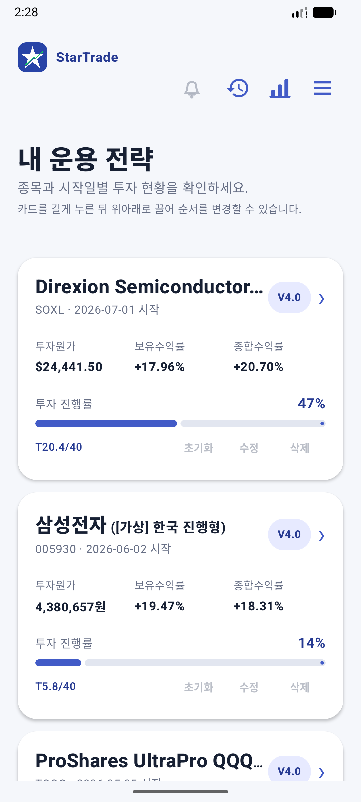
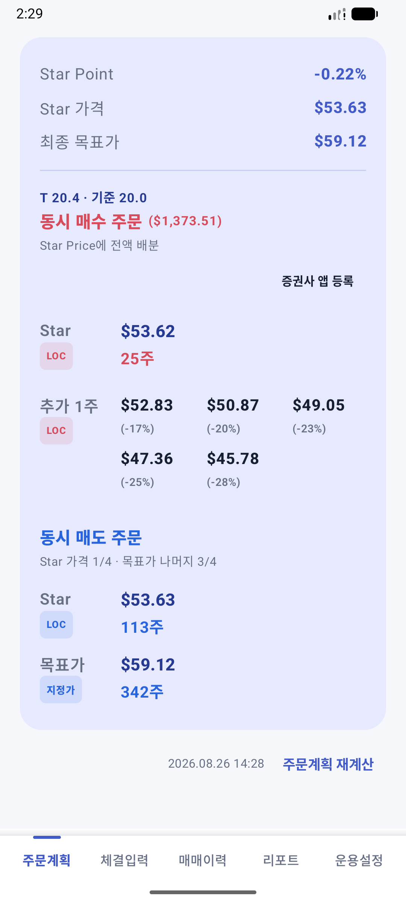
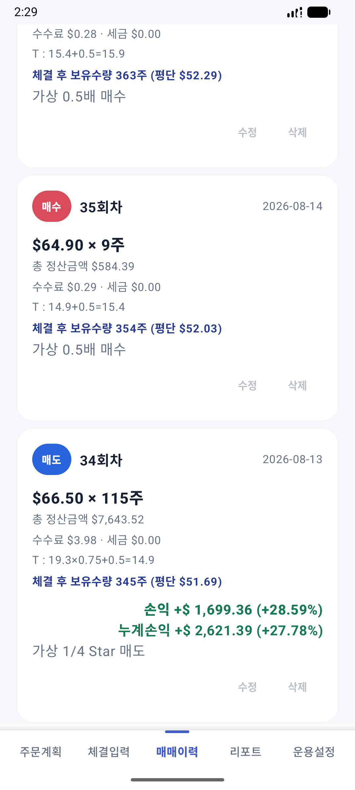
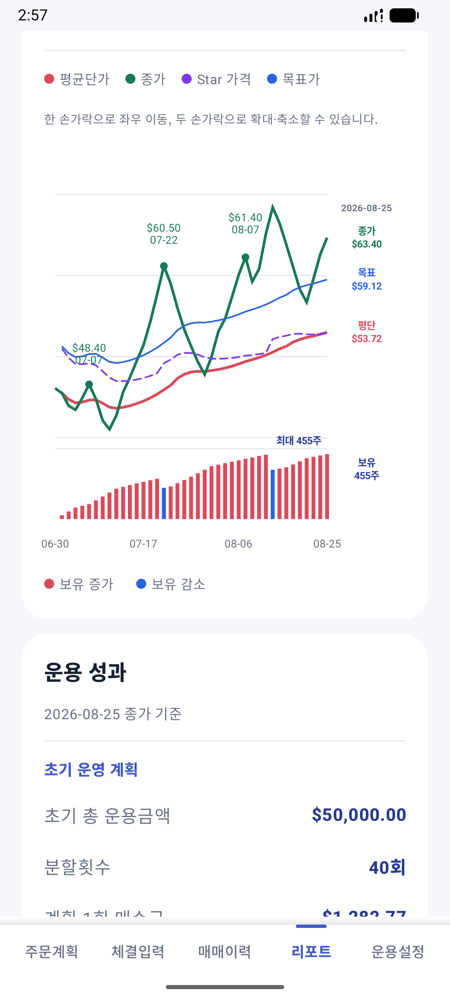
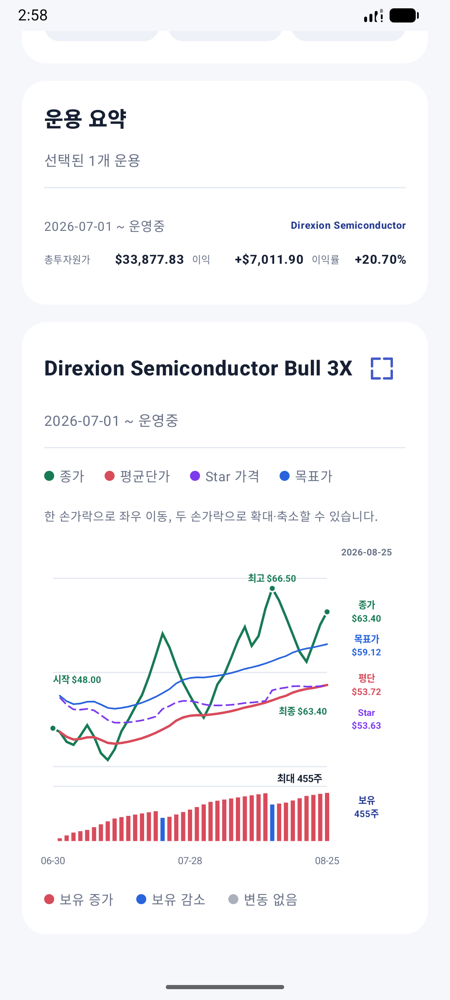

먼저 알아두기
기기 중심 저장
운용자료는 원칙적으로 휴대전화의 앱 전용 저장소에서 처리됩니다.
외부 종가
한국은 Yahoo Finance, 미국은 Yahoo Finance 또는 Twelve Data를 선택할 수 있습니다.
수동 확인
종가와 계산 결과에 오류·지연이 있을 수 있으므로 실제 거래 전 증권사 자료와 대조합니다.
암호화 백업
휴대전화 저장소와 Google Drive 백업은 사용자가 정한 비밀번호로 암호화합니다.
빠른 시작
운용 추가
목록의 점선 + 카드 또는 전체 메뉴의 운용 추가에서 신규 추가·엑셀 가져오기를 선택합니다.
운용 기준 설정
시장, 종목, 시작일, 금액, 분할횟수, 목표수익률과 운영버전을 확인합니다.
종가와 주문계획
최신 종가 날짜를 확인하고 주문계획을 계산합니다. 실제 주문은 증권사 앱에서 직접 실행합니다.
체결 저장
직접 입력, 카카오톡 체결문 붙여넣기, 카카오톡 체결 알림 자동 가져오기, Excel 업로드 일괄 입력 중에서 선택합니다.
결과 검산
매매이력, 평균단가, 보유수량, 현금과 손익을 실제 거래명세와 비교합니다.
백업
주요 변경 전 8자 이상의 비밀번호로 휴대전화 또는 Google Drive에 암호화 백업합니다.
주요 화면
아래 이미지는 SOXL을 2026년 7월 1일부터 총 50,000달러·40분할로 가상 운용한 실제 앱 화면입니다. 휴대전화에서는 좌우로 밀어 확인하고, 이미지를 누르면 원본 크기로 볼 수 있습니다.





매 거래일 종가에 따라 1회분(1,250달러)의 0.5배 또는 1배를 매수하고, 두 차례 보유수량의 1/4을 매도한 가상 시나리오입니다. 화면의 가격·체결·수익은 사용법 설명용이며 실제 투자성과가 아닙니다.
운용 추가
신규 추가
- 운용 추가 방식에서 신규 추가를 선택합니다.
- 한국·미국 시장과 종목코드, 종목명, 선택 입력 별칭을 입력합니다.
- 운용 시작일, 총 운용금액, 분할매수 횟수와 기대 순수익률을 입력합니다.
- 운영버전 V2.2·V3.0·V4.0 중 사용할 기준을 선택합니다. 새 운용의 기본값은 V4.0입니다.
- 내용을 다시 확인한 후 저장합니다.
엑셀 가져오기
- 제공된 양식에 체결일·매매구분·체결가·수량을 입력합니다.
- 수수료·세금·총 정산금액·메모는 필요한 경우 입력합니다.
- 앱에서 파일을 먼저 불러오고 종목정보·매매규칙·운영버전을 설정합니다.
- 첫 거래일이 운용 시작일로 적용되며 입력 순서대로 잔고와 손익을 재계산합니다.
종가와 주문계획
| 기능 | 역할 |
|---|---|
| 외부 종가 새로고침 | 시세 자료만 갱신합니다. 이미 저장된 주문계획은 자동으로 바뀌지 않습니다. |
| 주문계획 재계산 | 종가를 갱신한 뒤 현재 조건으로 새 계획을 계산하고 저장합니다. |
| 증권사 앱 열기 | 사용자가 등록한 증권사 앱을 엽니다. 가격·수량과 주문조건은 앱에서 확인한 뒤 증권사 앱에 직접 입력합니다. |
| 일반모드 | Star·평단 LOC 매수와 Star·목표가 매도 계획을 표시합니다. |
| 리버스모드 | 조건 충족 시 MOC 매도와 최근 5거래일 평균 LOC 계획을 표시합니다. |
- 주문계획에 사용된 종가 날짜와 마지막 계산 시각을 확인합니다.
- 16시 이후 자동 갱신이 실패하면 최근 정상 종가의 날짜를 안내하고 저장 자료로 계산을 이어갈 수 있습니다.
- 주문주기 안에서 체결이나 T값이 바뀌어도 재계산 버튼을 누르기 전까지 고정 계획을 유지합니다.
- 추가 1주 LOC 가격은 한 줄에 최대 3개씩 표시하며 Star·평단 주문과 구분해 확인합니다.
- 증권사 앱에서 LOC·MOC 지원 여부, 주문 가능시간, 가격·수량과 예상금액을 반드시 다시 확인합니다.
체결 입력과 매매이력
체결 입력은 아래 4가지 방식을 지원합니다.
직접 입력
체결일, 매수·매도, 체결가, 수량, 수수료, 세금과 총 정산금액을 사용자가 직접 입력합니다. 숫자 입력란에서는 괄호와 사칙연산 계산식도 사용할 수 있습니다.
카카오톡 체결문 붙여넣기
카카오톡으로 받은 증권사 체결문을 복사해 붙여넣으면 종목, 체결일, 매수·매도, 체결가, 수량과 정산금액을 자동으로 입력합니다. 분석 결과를 확인한 뒤 저장합니다.
카카오톡 체결 알림 자동 가져오기
알림 접근을 허용하면 카카오톡 체결 알림을 자동으로 감지·분석하여 기기 내부 승인 대기함에 저장합니다. 종 아이콘에서 내용을 확인·수정하고 승인하면 해당 운용의 매매이력에 반영됩니다.
Excel 업로드로 일괄 입력
작성한 매매기록 파일을 불러오면 첫 거래일부터 모든 체결을 입력 순서대로 일괄 저장하고 평균단가·수량·현금·손익을 다시 계산합니다.
- 총 정산금액이 있으면 실제 출금·입금 금액을 기준으로 계산하는 데 사용합니다.
- 수량 계산 결과는 정수여야 하며, 미국 종목의 체결일은 미국 동부시간 날짜를 기본값으로 사용합니다.
- 어떤 방식을 사용하더라도 종목·방향·가격·수량·정산금액을 실제 거래명세와 대조하세요.
과거 기록 수정
안전설정을 켜면 매매이력 카드의 수정·삭제 버튼을 사용할 수 있습니다. 과거 기록을 변경하면 이후 거래를 시간순으로 다시 적용하여 평균단가·수량·현금·손익을 전면 재계산합니다.
리포트와 운용 통계
운용상세 리포트
가격 추세, 운영 계획, 매매 내역, 보유 규모와 현재·최종 성과를 확인합니다.
운용 통계
기간, 현재·종료 상태, 종목과 포함조건을 선택해 여러 운용의 결과를 함께 봅니다.
가격·보유 추세
종가·평균단가·Star 가격·목표가 선과 보유수량 변화를 확인합니다. Star 가격은 점선으로 표시하며 확대·축소, 좌우 이동과 전체화면을 지원합니다.
Excel 내보내기
화면과 같은 성과 순서의 요약 시트와 매매 자료를 파일로 저장합니다.
통계의 기간과 겹침 조건은 선택 기간과 실제 운용기간이 일부라도 겹치는 현재·종료 운용을 포함합니다. 전체 종목 조회 시 같은 종목의 여러 운용은 통합하고 한국·미국 통화를 구분합니다.
백업과 복원
위치 선택
Google Drive 또는 휴대전화 저장소를 선택합니다.
비밀번호 입력
8자 이상의 비밀번호를 지정합니다. 비밀번호는 앱에 저장되지 않습니다.
파일 확인
저장 날짜·시각이 포함된 암호화 백업 파일이 실제로 생성됐는지 확인합니다.
복원 검산
복원 후 카드 수, 체결 건수, 평단, 수량, 현금과 손익을 비교합니다.
- Google Drive는 처음 선택한 폴더의 접근 권한을 기억하여 이후 같은 폴더에 바로 저장할 수 있습니다.
- 새 백업은 AES-256-GCM으로 암호화하며 기존 일반 JSON 백업도 복원할 수 있습니다.
- 백업 비밀번호를 잃으면 복구할 수 없습니다. 비밀번호와 백업 파일을 서로 다른 안전한 위치에 보관하세요.
- Twelve Data API 키와 승인 대기 체결 알림은 백업에 포함되지 않습니다.
카카오톡 체결 알림 자동 가져오기
- 전체 메뉴에서 체결 알림 자동 가져오기를 엽니다.
- 처리 내용 안내를 확인하고 기능을 켠 뒤 Android 설정에서 알림 접근을 허용합니다.
- Android 13 이상에서는 승인 대기 알림 표시 권한도 허용합니다.
- 운용상세의 운용설정에서 카드별 자동 연결을 켜거나 끕니다.
- 종 아이콘의 승인 대기함에서 내용을 확인·수정한 후 해당 운용에 저장합니다.
알림 원문과 승인 대기 자료는 개발자 서버로 전송하지 않고 기기 내부에서 처리합니다. 잠금화면 알림에는 종목·가격·수량을 표시하지 않습니다.
화면과 안전 설정
| 설정 | 안내 |
|---|---|
| 화면 모드 | 시스템·주간·야간 모드 중 선택하거나 야간예약 시작·종료 시간을 설정합니다. |
| 글자 크기 | 80~130% 범위에서 슬라이더를 누른 상태로 움직여 조절합니다. |
| 수정·삭제·초기화 안전설정 | 위험 작업이 필요할 때만 켜고 작업 후 다시 끕니다. |
| 증권사 앱 등록 | 주문계획에서 열 증권사 앱을 선택·변경·해제합니다. |
| 운영상세 하단 메뉴 | 주문계획·체결입력·매매이력·리포트·운용설정으로 이동합니다. |
| 운용별 고급설정 | 운영 기준, 운영버전, 매도이익 확장운영, T 산정방식과 리버스 복귀조건을 관리합니다. |
자주 묻는 문제
종가가 갱신되지 않습니다.
인터넷 연결, 시장과 종목코드, 미국 제공처, Twelve Data API 키와 사용한도를 확인하세요. 저장된 최근 정상 종가가 있으면 주문계획에 사용된 날짜를 반드시 확인합니다.
주문계획이 체결 후에도 바뀌지 않습니다.
v2.58 이후 주문계획은 계산 시점에 고정됩니다. 하단의 주문계획 재계산 버튼을 눌러야 체결과 현재 조건이 새 계획에 반영됩니다.
수정·삭제 버튼이 동작하지 않습니다.
전체 메뉴의 수정·삭제·초기화 안전설정을 잠시 켜세요. 작업을 마치면 다시 꺼두는 것이 안전합니다.
리버스 주문이 표시되지 않습니다.
최근 종가, 최종 목표가, T, 분할횟수와 일반모드 복귀조건을 확인하세요. 종가가 5건보다 적으면 최근 5거래일 평균 계획도 계산되지 않을 수 있습니다.
백업 비밀번호를 잊었습니다.
비밀번호는 앱이나 개발자 서버에 저장되지 않아 복구할 수 없습니다. 기억하고 있는 다른 백업 파일을 사용해야 합니다.
평균단가나 현금이 거래명세와 다릅니다.
매매이력의 매수·매도 방향, 총 정산금액, 수수료·세금과 체결 순서를 확인하세요. 수정 전에는 반드시 백업하세요.
문의와 개인정보
개인정보 처리 방식, 외부 통신, 보관·삭제 방법은 별도의 개인정보처리방침에서 확인할 수 있습니다.
개인정보처리방침 열기문의
설명서에서 해결되지 않는 내용은 lowsky.lab@gmail.com으로 문의할 수 있습니다. 개발자는 사용자의 기기나 Google Drive 자료에 접근하거나 원격으로 삭제할 수 없습니다.
최종 갱신: 2026년 8월 26일 · StarTrade v2.60 (versionCode 96)